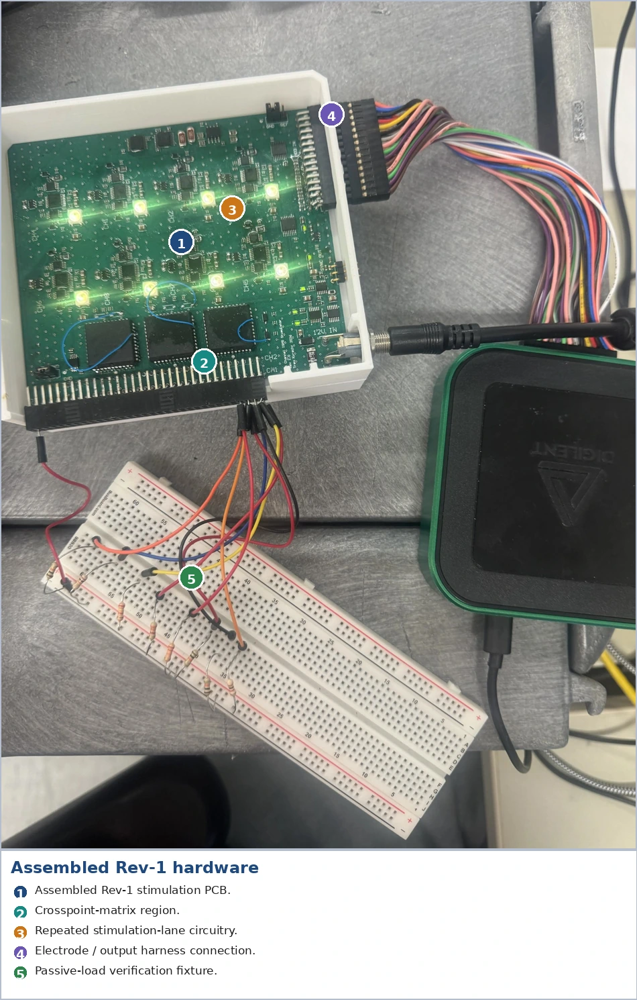
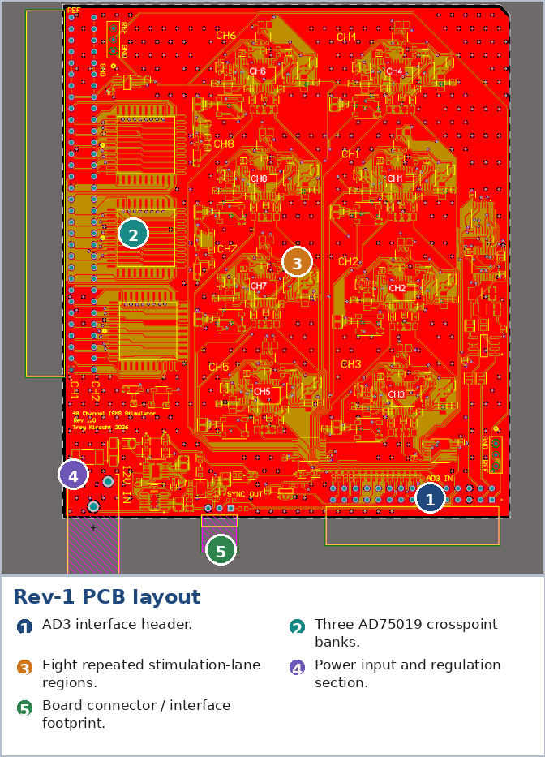
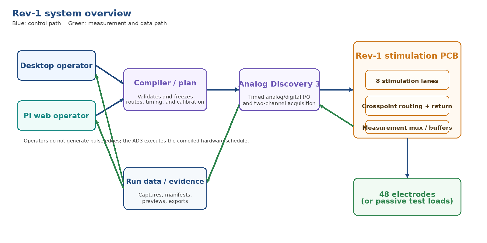
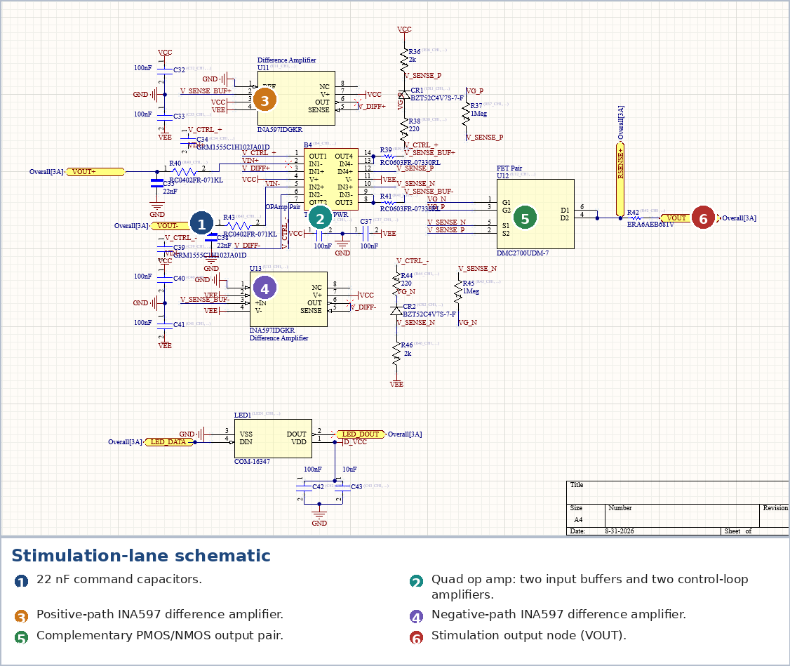
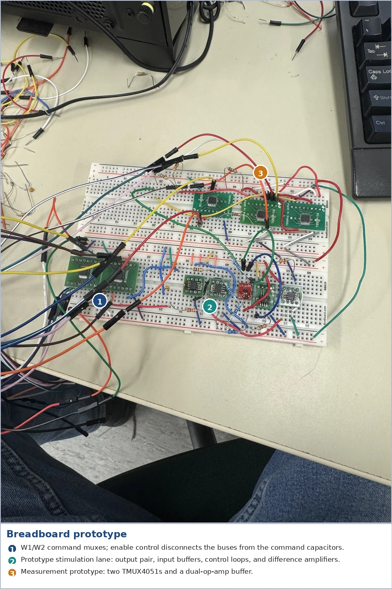
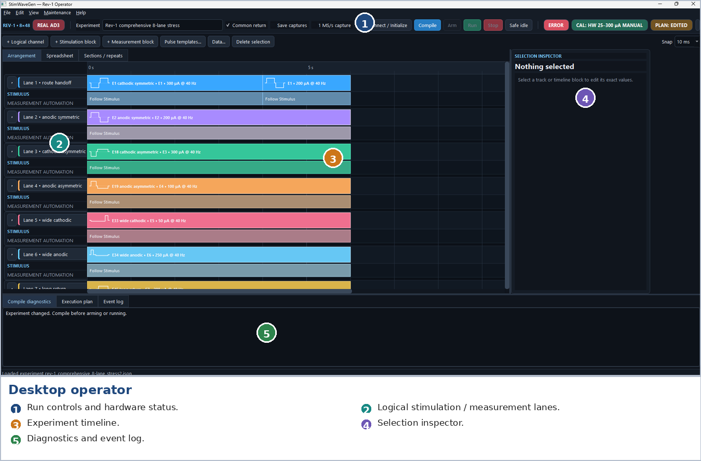
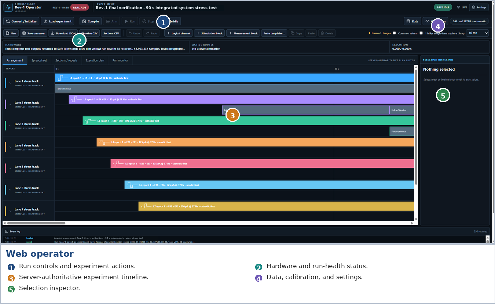

Research engineering · Completed bench prototype
48-Electrode Intraspinal Stimulation — Rev 1
An eight-lane stimulation instrument with flexible routing to 48 electrodes. I developed the architecture, analog circuitry, four-layer PCB, deterministic control software and operator interfaces, then validated the integrated system on the bench.




Precision where it is needed
The research system needed access to 48 electrode sites, but only eight simultaneous stimulation lanes. Building 48 complete precision output stages would have increased board area, cost, calibration work and first-board debugging effort. I evaluated independent outputs, multiplexed sample-and-hold arrangements, Howland/current-pump circuits and an open-loop MOSFET approach before selecting eight local feedback-controlled lanes with flexible routing.
Each lane has independent source and sink branches. Three AD75019 crosspoint matrices route those lanes to the 48 electrode outputs. The number of precision analog stages therefore follows the required concurrency, while the routing network supplies electrode access. Common-return operation and selected-electrode grounding are both supported.
The resulting tradeoff is explicit: eight simultaneous lanes, two shared command-voltage buses and a shared measurement path. Those resource limits are handled by the experiment compiler.

From stored commands to regulated current
Each source/sink branch stores its command on a 22 nF capacitor inside a feedback loop. TMUX4051 multiplexers briefly connect the shared AD3 analog buses to the selected capacitors, then disconnect them while the local output stages regulate current. The compiler also schedules writes back to neutral at phase boundaries, so an old command cannot simply remain between phases.
The output stage combines PMOS/NMOS devices, op-amp feedback and sense amplification. Breadboard testing exposed measurement loading and source-side ringing; input buffering, gate resistance and compensation were developed before being carried into the PCB. Source and sink calibration curves are generated separately for every physical lane and inverted during compilation.
The final board accepts 12 V through input protection. An LT3045 provides the positive analog rail; an LTC3261 inverter and LT3094 provide the negative rail. The assembled operating rails are approximately ±7.8 V. Layout kept command-capacitor nodes, feedback paths and sense connections local, with a ground plane beneath sensitive routing.




An experiment compiler and two operator interfaces
StimWaveGen turns an authored experiment into an immutable hardware plan. Pulse amplitudes, phase widths, interphase gaps, route assignments and measurement windows are checked before Arm. The plan retains calibration identity and content hashes so later file edits cannot silently change an armed experiment.
The AD3 generates pulse-critical analog and digital timing from preloaded arrays. The PC or Raspberry Pi handles authoring, configuration and data management; USB calls do not generate individual pulse edges. The run workflow clears routes, neutralizes commands and establishes digital power before the external stimulation supply is acknowledged.
The desktop application provides per-channel timelines, stimulation and measurement editing, run monitoring and saved-data inspection. The Raspberry Pi web operator exposes the same experiment model through a server-authoritative interface. Measurement can remain on one lane or interleave between two and eight targets using hardware-scheduled mux changes.


Acquisition that outlasts RAM
Two float32 measurement channels at 1 MS/s produce approximately 8 MB/s. Long captures therefore use preallocated storage and a bounded 64 MiB queue, writing paired samples sequentially during the experiment. Demultiplexing, previews and derived files are produced after the system returns to idle.
A mixed plan can request different measurement modes and rates. The final spool policy chooses the highest requested rate before Arm and holds it for the whole file. This removed a rate-transition assumption that had failed during long-run testing. Raw data, integrity counters and partial records are retained for inspection.
Final bench results
The final characterization used measured 3.256 kΩ, 9.930 kΩ and 21.850 kΩ passive loads, retained waveform data and the active verified calibration. Results below summarize the completed campaign in my technical report.
| Test | Result | Interpretation |
|---|---|---|
| Current tracking, 100–300 µA | Mean absolute error 0.400–0.646%; worst 4.511%. | E1 subset across the three loads; the worst point was a 125 µA asymmetric phase. |
| Eight simultaneous lanes | Worst absolute error 1.655%. | Final 200 µA test after resolving the shared source-bus interaction. |
| Tested load/compliance point | 300 µA into 21.85 kΩ without observed high-current collapse. | A demonstrated resistive-load point on ±7.8 V rails. |
| Pulse width / interphase gap | Worst errors 11.973 µs / 8.000 µs. | Measured at 50% current crossings; includes analog settling. |
| Integrated phase charge | Mean mismatch 1.760–2.108%; worst 5.569%. | Derived from the retained internal-sense current waveforms. |
| Long acquisition | 89,879,848 paired sample instants at 1 MS/s; zero loss, corruption or discontinuities. | 89.879848 s captured during a 90 s mixed-topology test. |
| Interleaving and routing | 14 interleaved fragments with zero suspected mapping errors; representative routes across all three banks passed. | Included E33 after reflow and a persistent-ground handoff test. |
Measurement scope. Current figures use the instrument's internal 681 Ω sense path; they are tracking results, not independent absolute-current calibration. Analog threshold timing includes settling. The campaign covered passive loads and conductive-solution bench setups; biological testing was outside its scope.
Debugging a failure that only appeared with eight lanes
Each lane could produce approximately 200 µA by itself, yet with all eight active the source phase on seven lanes fell to roughly 153–167 µA. The sink phase remained near the target, and the last-programmed source lane stayed correct.
The same pattern at low and high load resistance made compliance an unlikely explanation. Reversing the programming order changed which lane remained correct; reversing pulse polarity showed that the fault followed the source/W1 path. Adding a 15 µs quiet interval after each source start removed the interaction. The final simultaneous test then achieved the reported ≤1.655% worst internal-sense tracking error.
This was a system-level timing and analog interaction: isolated lane tests and a valid software schedule had both been insufficient. The investigation connected programming order, stored commands, waveform measurements and a compiler timing change.
Outcome and continuation
Rev 1 established the routed eight-lane architecture, brought the custom PCB through assembly and rework, and supplied a complete experiment-to-evidence workflow. My work covered the circuit, firmware/control, operator software and validation layers, with requirements and review from Dr. Kambiz Moez and Dr. Soroush Mirkiani.
The next phase explores dedicated neural recording/stimulation chips and alternative controllers. The Rev 2 case study covers the FPGA chip emulators, Zynq acquisition path and RP2040 PIO/DMA engine developed to evaluate those choices.
Figures 1–7 and final Rev 1 results: Trey Kirscht, Design and Validation of an Eight-Lane Routed Stimulation Instrument for 48-Electrode Intraspinal Microstimulation, WKEXP 905 technical report, Summer 2026. Figures are extracted directly from the supplied report; the full report is not hosted here.